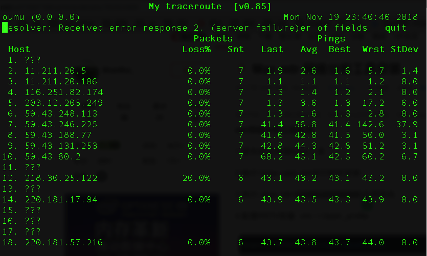

mtr （My traceroute）也是几乎所有 Linux 发行版本预装的网络测试工具。他把 ping和 traceroute 的功能并入了同一个工具中，所以功能更强大。
mtr 默认发送 ICMP 数据包进行链路探测。可以通过 -u 参数来指定使用 UDP 数据包用于探测。
相对于 traceroute 只会做一次链路跟踪测试，mtr 会对链路上的相关节点做持续探测并给出相应的统计信息。所以，mtr能避免节点波动对测试结果的影响，所以其测试结果更正确，建议优先使用。
mtr [-hvrctglspni46] [—help] [—version] [—report] [—report-cycles=COUNT]
[—curses] [—gtk] [—raw] [—split] [—no-dns] [—address interface]
[—psize=bytes/-s bytes] [—interval=SECONDS] HOSTNAME [PACKETSIZE]# 安装
brew install mtr
# 启用命令别名
vim ~/.profile
alias mtr="sudo /usr/local/sbin/mtr"
# 配置path变量
vim ~/.bash_profile
export PATH=$PATH:/usr/local/sbin
source ~/.profile
# 使其生效
source ~/.profile
source ~/.bash_profile
# 使用
mtr baidu.com
-r 或 —report：以报告模式显示输出。
-p 或 —split：将每次追踪的结果分别列出来，而非如 —report统计整个结果。
-s 或 —psize：指定ping数据包的大小。
-n 或 —no-dns：不对IP地址做域名反解析。
-a 或 —address：设置发送数据包的IP地址。用于主机有多个IP时。
-4：只使用 IPv4 协议。
-6：只使用 IPv6 协议。
另外，也可以在 mtr 运行过程中，输入相应字母来快速切换模式，比如：
？或 h：显示帮助菜单。
d：切换显示模式。
n：切换启用或禁用 DNS 域名解析。
u：切换使用 ICMP或 UDP 数据包进行探测。默认配置下，返回结果中各数据列的说明：
第一列（Host）：节点IP地址和域名。如前面所示，按n键可以切换显示。
第二列（Loss%）：节点丢包率。
第三列（Snt）：每秒发送数据包数。默认值是10，可以通过参数 -c 指定。
第四列（Last）：最近一次的探测延迟值。
第五、六、七列（Avg、Best、Wrst）：分别是探测延迟的平均值、最小值和最大值。
第八列（StDev）：标准偏差。越大说明相应节点越不稳定。正常情况下，从客户端到目标服务器的整个链路，会显著的包含如下区域：
客户端本地网络（本地局域网和本地网络提供商网络）：如前文链路测试结果示例图中的区域 A。如果该区域出现异常，如果是客户端本地网络相关节点出现异常，则需要对本地网络进行相应排查分析。否则，如果是本地网络提供商网络相关节点出现异常，则需要向当地运营商反馈问题。
运营商骨干网络：如前文链路测试结果示例图中的区域 B。如果该区域出现异常，可以根据异常节点 IP 查询归属运营商，然后直接或通过阿里云售后技术支持，向相应运营商反馈问题。
目标服务器本地网络（目标主机归属网络提供商网络）: 如前文链路测试结果示例图中的区域 C。如果该区域出现异常，则需要向目标主机归属网络提供商反馈问题。
如前文链路测试结果示例图中的区域 D 所示。如果中间链路某些部分启用了链路负载均衡，则 mtr 只会对首尾节点进行编号和探测统计。中间节点只会显示相应的 IP 或域名信息。
由于链路抖动或其它因素的影响，节点的 Best 和 Worst 值可能相差很大。而 Avg（平均值） 统计了自链路测试以来所有探测的平均值，所以能更好的反应出相应节点的网络质量。
而 StDev（标准偏差值）越高，则说明数据包在相应节点的延时值越不相同（越离散）。所以，标准偏差值可用于协助判断 Avg 是否真实反应了相应节点的网络质量。例如，如果标准偏差很大，说明数据包的延迟是不确定的。可能某些数据包延迟很小（例如：25ms），而另一些延迟却很大（例如：350ms），但最终得到的平均延迟反而可能是正常的。所以，此时 Avg 并不能很好的反应出实际的网络质量情况。
综上，建议的分析标准是：
如果 StDev 很高，则同步观察相应节点的 Best 和 Wrst，来判断相应节点是否存在异常。
如果 StDev 不高，则通过 Avg来判断相应节点是否存在异常。
注：上述 StDev “高”或者“不高”，并没有具体的时间范围标准。而需要根据同一节点其它列的延迟值大小来进行相对评估。比如，如果 Avg 为 30ms，那么，当 StDev 为 25ms，则认为是很高的偏差。而如果 Avg 为 325ms，则同样的 StDev（25ms），反而认为是不高的偏差。
任一节点的 Loss%（丢包率）如果不为零，则说明这一跳网络可能存在问题。导致相应节点丢包的原因通常有两种：
运营商基于安全或性能需求，人为限制了节点的 ICMP 发送速率，导致丢包。
节点确实存在异常，导致丢包。
可以结合异常节点及其后续节点的丢包情况，来判定丢包原因：
如果随后节点均没有丢包，则通常说明异常节点丢包是由于运营商策略限制所致。可以忽略相关丢包。如前文链路测试结果示例图中的第 2 跳所示。
如果随后节点也出现丢包，则通常说明异常节点确实存在网络异常，导致丢包。如前文链路测试结果示例图中的第 5 跳所示。
另外，需要说明的是，前述两种情况可能同时发生。即相应节点既存在策略限速，又存在网络异常。对于这种情况，如果异常节点及其后续节点连续出现丢包，而且各节点的丢包率不同，则通常以最后几跳的丢包率为准。如前文链路测试结果示例图所示，在第 5、6、7跳均出现了丢包。所以，最终丢包情况，以第 7 跳的 40% 作为参考。
大部分时候以最后一跳丢包情况为准。
延迟跳变
如果在某一跳之后延迟明显陡增，则通常判断该节点存在网络异常。如前文链路测试结果示例图所示，从第 5 跳之后的后续节点延迟明显陡增，则推断是第 5 跳节点出现了网络异常。
不过，高延迟并不一定完全意味着相应节点存在异常。如前文链路测试结果示例图所示，第 5 跳之后，虽然后续节点延迟明显陡增，但测试数据最终仍然正常到达了目的主机。所以，延迟大也有可能是在数据回包链路中引发的。所以，最好结合反向链路测试一并分析。
ICMP 策略限速也可能会导致相应节点的延迟陡增，但后续节点通常会恢复正常。如前文链路测试结果示例图所示，第 3 跳有 100% 的丢包率，同时延迟也明显陡增。但随后节点的延迟马上恢复了正常。所以判断该节点的延迟陡增及丢包是由于策略限速所致。
转载自： https://help.aliyun.com/knowledge_detail/40573.html
[1] https://help.aliyun.com/knowledge_detail/40573.html: https://help.aliyun.com/knowledge_detail/40573.html